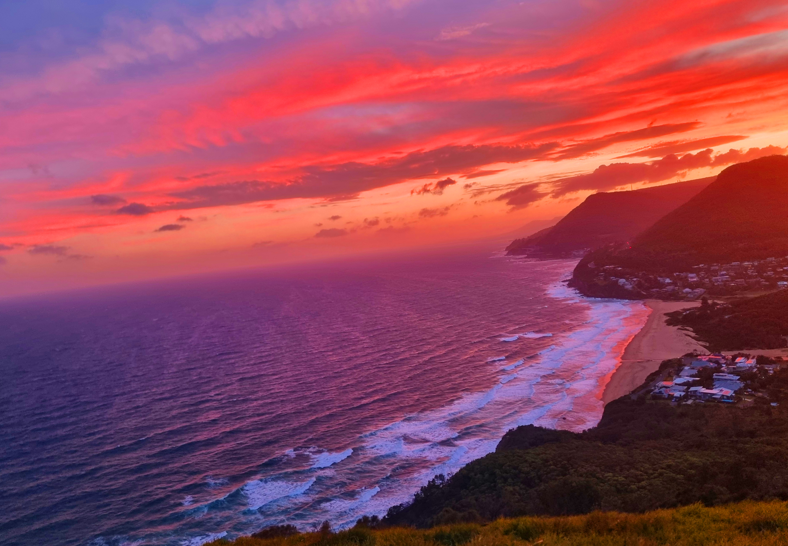

Före- och efterbilder

Före

Efter
Den här skönheten fick en rejäl make-over, för att uppnå den drömlika looken har jag börjat med att justera vitbalansen och ljuset genom att sänka exponering, högdagrar, vitpunkt och svartpunkt. Skuggorna har däremot höjts mycket tillsammans med kontrasten för att skapa lite mer definiering i bilden. Den röda tråden i alla redigerade bilder är att jag har sänkt klarheten en del för att få bilden att uppfattas som mjukare, vilket var extra nödvändigt i denna bild där det finns en päls. Förutom det grundläggande ljuset så har färgerna justerats mycket. Originalet var varmt och gult, vilket justerades med vitbalansens minskning av färgtemperatur och färgton. För att matcha med de andra bilderna så blev det också mycket fokus på färgbalansen, där mellantonerna blev mer blå och skuggorna mer röda. Ingen av de bilder jag valde hade något störande objekt som kändes nödvändigt att ta bort, men för sakens skull så tog jag bort dom gula märkningarna från tjurens öron och hals.

Före

Efter
Denna solnedgång var väldigt övermättad så den första prioriteringen var att få till rätt färg genom att dra ner på mättnaden rejält och skifta färgtonerna till en något blekare persiko-färg istället för den starka rosa/röda färgen. Färgbalansen har justerats för att matcha de andra bilderna i serien. Högdagrarna och vitpunkterna har sänkts medan skuggorna och exponeringen har höjts. Förutom mättnaden så var kompositionen ett problem här, så jag har rätat ut bilden och beskurit en del av landytan för att dra mer fokus till havet och himlen som är i huvudfokus. Genom att ta bort den närmsta markytan minskar känslan av att man står där på platsen och istället svävar något ovanför, vilket jag tycker bidrar till den drömlika känslan. Eftersom himlen tar upp majoriteten av färg-fokuset på bilden så har alla andra bilder i serien fått en detalj som påminner om denna färg för att knyta ihop hela serien.

Före

Efter
Den kanske mest komplicerade bilden att redigera ur serien var denna, som hade otroligt mycket grön färg och mörker. Så till en början har exponeringen höjts extremt mycket tillsammans med skuggor, vitpunkter och svartpunkter. Högdagrarna har sänkts nästan hela vägen för att kompensera den stora ljusökningen. Färgtonen har dragits mer åt den rosa sidan eftersom det redan fanns så mycket grönt. Skuggorna har fått lite mer gula toner för att skapa lite bredare variation i färgpaletten, även himlen har fått en maskering där en gnutta blått lagts in för ytterligare variation. Det klurigaste var blommornas färg, de hade en väldigt stark magenta färg och det stack ut från resten av serien. För att få bilden att smälta in mer med de andra så fick jag göra en nyansförskjutning på den specifika rosa färgen för att uppnå en ton som påminde mer om solnedgången i tidigare bild. En bildrotering har också utförts för att räta ut horisonten. Vinkeln på blommornas lutning påminner nu också om linjerna på tjurens horn i första exemplet.